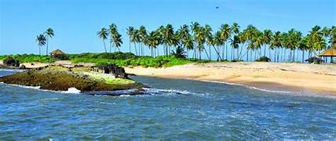
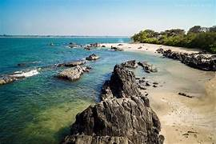

St. Mary’s Island


Overview
St. Mary’s Island, also known as Coconut Island, is a stunning group of small islands near Udupi, famous for its crystal-clear waters, white sand beaches, and unique hexagonal volcanic rock formations. It is one of the most beautiful and peaceful destinations in Coastal Karnataka.
Tips
- Best time: Oct–Mar
- Bring water & sunscreen